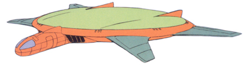

| Dish |
|
|  | |
General and Technical Data |
|
|
Unit type: long range patrol craft Armament: 1x 25mm machinegun |
|
| Technical and Historical Notes | |
|
The small aircraft known as the Dish served multiple functions for the Federation Forces, including EWAC (Early Warning And Control), EW (Electronic Warfare) and transport. The large radome that made up the central portion of the Dish's fuselage served as powerful long range radar, although its effectiveness was greatly reduced by the advent of the Minovsky particle scattering system. Dish aircraft often assisted in long-range target identification, increasing the effectiveness of Federation Forces troop deployment.
Since Dish aircraft were not designed for combat, they were armed with only a small machine gun for defense. |
 RPG quick stats sheet
RPG quick stats sheet